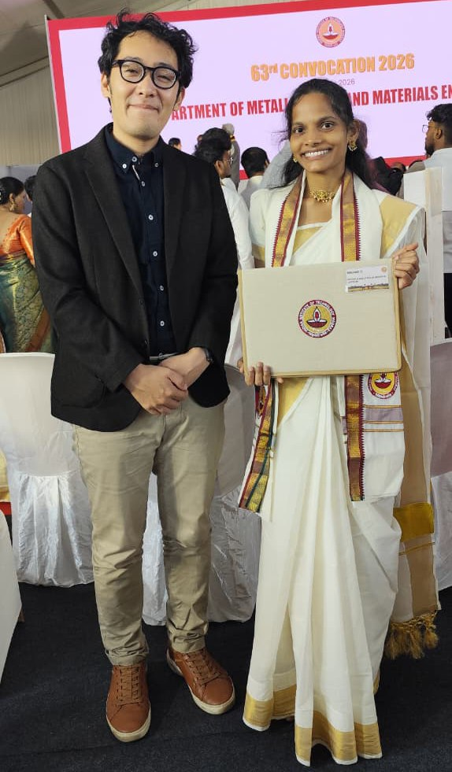

Ms. Nethala Leela Naga Lakshmi (M.Tech) and Ms. Karthikayini S (B.Tech) received their degrees at the 63rd Convocation of IIT Madras. Ms. Nethala worked on precursor-derived non-oxide ceramics for photocatalytic applications, and Ms. Karthikayini worked on doped carbon-based materials for CCUS applications.
Ms. Nethala also successfully completed a research internship at Nagoya University, Japan, under the JST LOTUS Programme, where she achieved substantial results in her computational study on hydrogen activation by frustrated Lewis pairs (FLPs) using density functional theory (DFT).
We congratulate both graduates on this milestone and thank them for their contributions to the lab. We wish them continued success in their future careers.